Metric | Value |
|---|---|
Total poisoning deaths | 62,399 |
Analysis years | 1997 - 2022 |
% Male | 59.3% |
Median age (years) | 30 |
% Accidental/unspec. | 43.3% |
% Self-harm | 4.2% |
% Assault | 0% |
% Undetermined | 52.5% |
Poisoning Deaths in South Africa
poisoning
injury-mortality
vital-registration
icd10
epidemiology
Epidemiology of poisoning-related mortality from the national vital registration system, 1997–2022
1 Overview
Poisoning is a significant cause of injury death in South Africa. This page describes the epidemiology of poisoning deaths recorded in the national vital registration (VR) system, using underlying-cause ICD-10 codes. Four intent categories are distinguished, though the category boundaries are substantially distorted by the absence of a manner of death field on the South African death notification form (see methodological note below):
| ICD-10 block | Category | Description |
|---|---|---|
| X40–X49 | Accidental / unspecified | Unintentional exposure or intent not documented on DNF (ICD-10 default) |
| X60–X69 | Self-harm | Intentional self-poisoning |
| X85 | Assault | Poisoning inflicted by another person |
| Y10–Y19 | Undetermined | Intent unknown or not specified |
ImportantCaution: intent categories reflect ICD-10 coding defaults, not certified intent
South Africa’s death notification form (DNF) does not include a field for manner of death, contrary to the WHO-recommended Medical Certificate of Cause of Death (1). Under ICD-10 Volume 2 coding rules, when manner of death is not stated by the certifier, external cause deaths are assigned to the most appropriate Accidental code by default (2).
This structural omission has two direct consequences for the intent breakdown presented in this analysis:
“Accidental” (X40–X49) is substantially over-represented. In the absence of a certified manner, Stats SA coders apply the ICD-10 default and assign an accidental poisoning code. The scale of this effect is illustrated starkly for firearm deaths: Groenewald et al. (2023) showed that in Stats SA’s 2017 data, 98.7% of firearm deaths were coded as accidental, while the National Cause-of-Death Validation (NCoDV) forensic data from the same period found 88.5% were homicides (3). The same mechanism applies to poisoning, where the absence of certified intent causes genuine self-harm and assault deaths to be silently absorbed into the accidental category.
“Self-harm” (X60–X69) and “Undetermined” (Y10–Y19) are substantially under-represented. These categories require the certifier to explicitly document suicidal intent or uncertainty — information that in South Africa is almost exclusively available from forensic pathology reports. Non-forensic certifiers (the majority for poisoning deaths in clinical settings) default to the accidental category or do not specify intent, regardless of clinical context or stigma considerations (4–6).
Interpretation: The “Accidental” category in these data should be read as “accidental or intent not specified.” The true proportion of intentional and undetermined-intent poisoning deaths is almost certainly higher than shown. Accurate intent-stratified estimates require triangulation with forensic mortality surveillance data, poison information centre (NPIS) call records, and other independent sources (7).
1.1 Summary statistics
2 Trends over time
2.1 Annual deaths and crude death rate
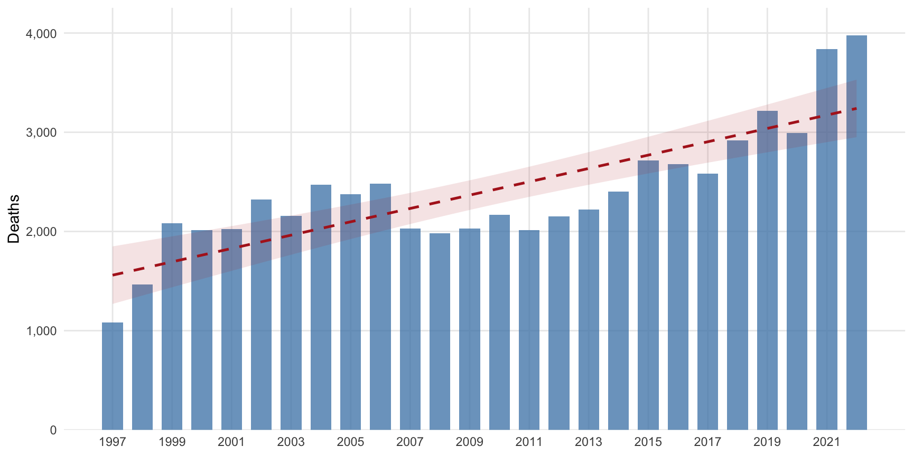
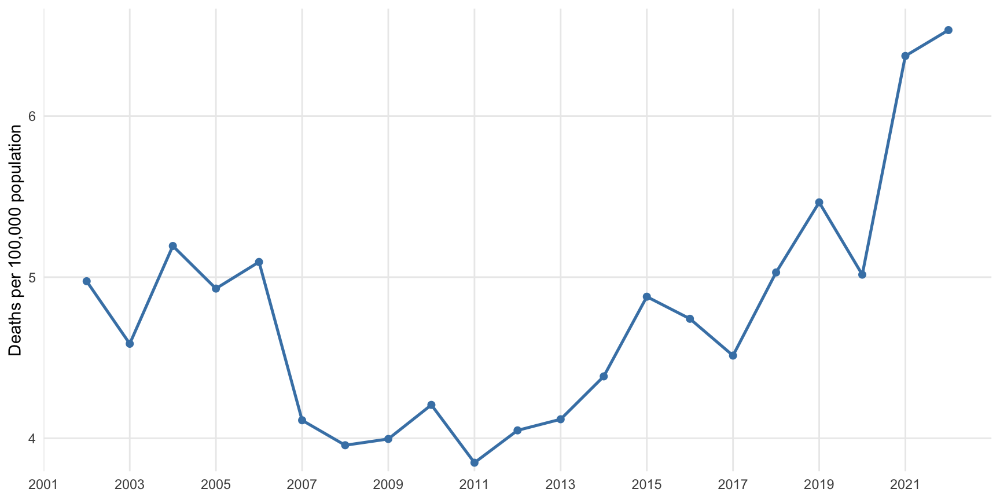
2.2 Deaths by intent
The “Accidental/unspec.” category (blue) dominates because ICD-10 Vol. 2 coding rules assign an accidental code whenever manner of death is not stated — see the methodological note above (1,2).
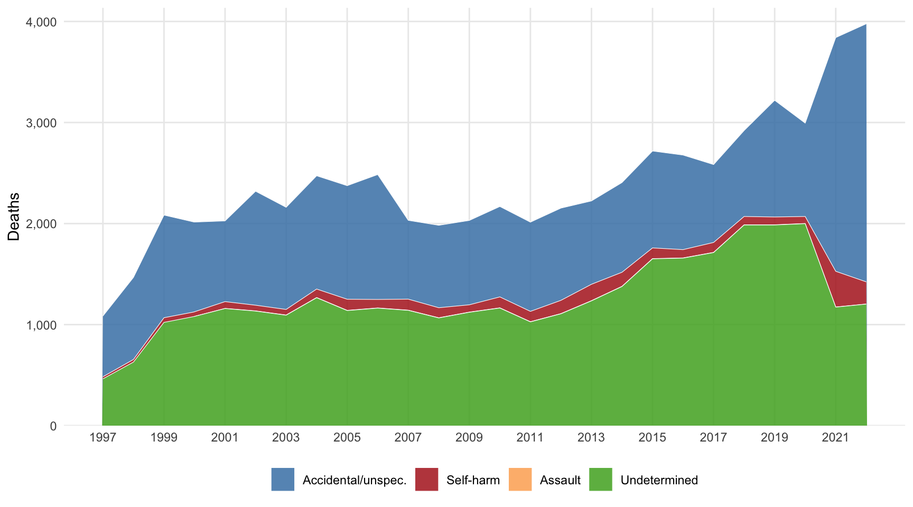
2.3 Annual summary
Year | Total | Accidental/unspec. | Self-harm | Assault | Undetermined | % Male | Median age |
|---|---|---|---|---|---|---|---|
1,997 | 1,085 | 601 | 21 | 0 | 463 | 58.7 | 26 |
1,998 | 1,467 | 812 | 26 | 0 | 629 | 58.1 | 29 |
1,999 | 2,084 | 1,016 | 46 | 0 | 1,022 | 60.3 | 29 |
2,000 | 2,015 | 888 | 45 | 1 | 1,081 | 58.7 | 31 |
2,001 | 2,025 | 799 | 67 | 0 | 1,159 | 60.3 | 30 |
2,002 | 2,320 | 1,128 | 56 | 2 | 1,134 | 57.6 | 34 |
2,003 | 2,159 | 1,011 | 55 | 0 | 1,093 | 58.9 | 29 |
2,004 | 2,471 | 1,121 | 84 | 0 | 1,266 | 58.2 | 28 |
2,005 | 2,373 | 1,124 | 110 | 0 | 1,139 | 58.9 | 27 |
2,006 | 2,483 | 1,236 | 84 | 0 | 1,163 | 57.8 | 25 |
2,007 | 2,030 | 780 | 109 | 0 | 1,141 | 58.5 | 28 |
2,008 | 1,981 | 816 | 99 | 0 | 1,066 | 58.0 | 28 |
2,009 | 2,029 | 835 | 72 | 0 | 1,122 | 62.0 | 28 |
2,010 | 2,167 | 895 | 108 | 0 | 1,164 | 59.8 | 27 |
2,011 | 2,012 | 883 | 102 | 0 | 1,027 | 61.8 | 30 |
2,012 | 2,151 | 913 | 131 | 0 | 1,107 | 59.8 | 28 |
2,013 | 2,222 | 825 | 162 | 0 | 1,235 | 59.4 | 29 |
2,014 | 2,404 | 888 | 139 | 0 | 1,377 | 60.1 | 28 |
2,015 | 2,716 | 959 | 106 | 0 | 1,651 | 61.9 | 29 |
2,016 | 2,676 | 936 | 82 | 0 | 1,658 | 59.7 | 29 |
2,017 | 2,582 | 771 | 98 | 0 | 1,713 | 59.1 | 30 |
2,018 | 2,919 | 851 | 82 | 0 | 1,986 | 59.1 | 30 |
2,019 | 3,218 | 1,155 | 77 | 0 | 1,986 | 57.6 | 31 |
2,020 | 2,994 | 924 | 69 | 2 | 1,999 | 57.8 | 32 |
2,021 | 3,839 | 2,313 | 353 | 0 | 1,173 | 59.1 | 31 |
2,022 | 3,977 | 2,554 | 219 | 1 | 1,203 | 61.0 | 32 |
3 Epicurve
3.1 Monthly time series
The monthly epicurve shows all poisoning deaths from 1997 to 2022, stacked by intent category. The overlaid LOESS smoother (dark line with 95% CI) tracks the long-term trajectory of total counts while the stacked colours reveal whether any compositional shift in intent type accompanied the volume change.
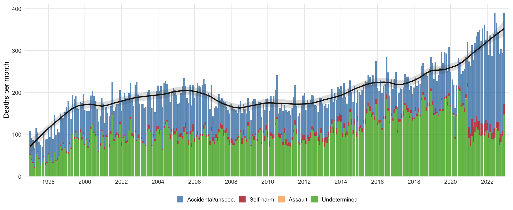
3.2 Monthly seasonality
Average deaths per calendar month (averaged across all years), with ±1 SD error bars. A consistent seasonal pattern would suggest environmental or behavioural drivers (e.g. agricultural pesticide exposure in summer, indoor heating–related gas poisoning in winter).
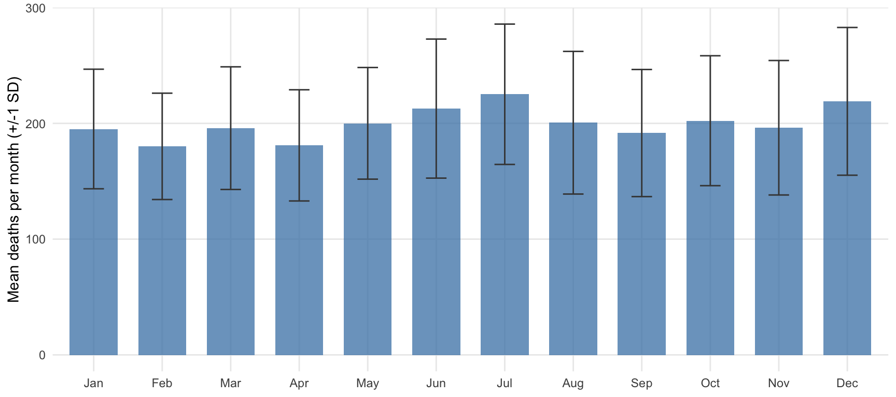
4 Age and sex
4.1 Age-sex pyramid
The population pyramid shows the sex- and age-distribution of all poisoning deaths. Males to the left, females to the right.
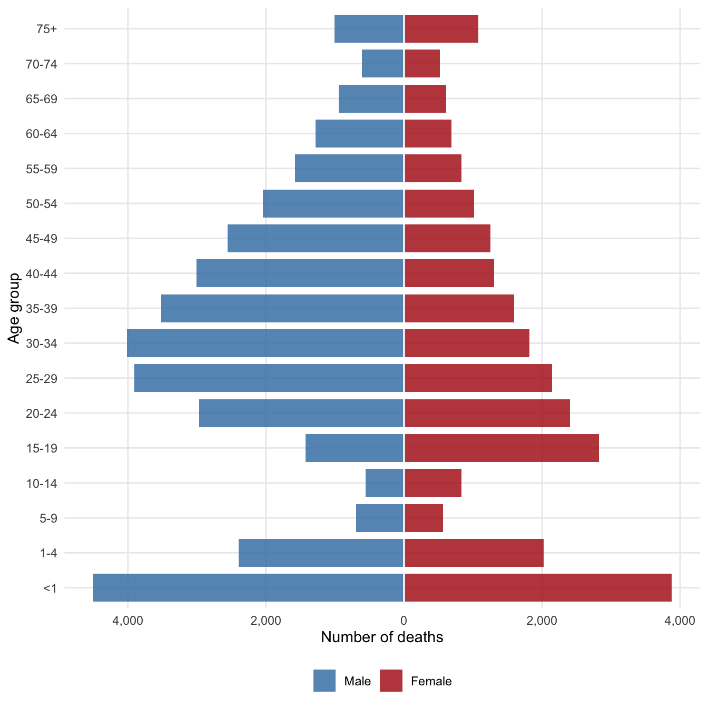
4.2 Age-sex pyramid by intent
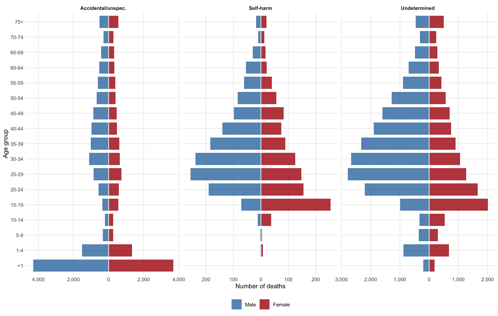
4.3 Age × sex table
Age group | Male | Female | Total | % Male |
|---|---|---|---|---|
<1 | 4,502 | 3,874 | 8,376 | 53.7 |
1-4 | 2,394 | 2,023 | 4,417 | 54.2 |
5-9 | 693 | 565 | 1,258 | 55.1 |
10-14 | 558 | 832 | 1,390 | 40.1 |
15-19 | 1,424 | 2,825 | 4,249 | 33.5 |
20-24 | 2,969 | 2,406 | 5,375 | 55.2 |
25-29 | 3,904 | 2,143 | 6,047 | 64.6 |
30-34 | 4,018 | 1,820 | 5,838 | 68.8 |
35-39 | 3,518 | 1,598 | 5,116 | 68.8 |
40-44 | 3,009 | 1,304 | 4,313 | 69.8 |
45-49 | 2,558 | 1,252 | 3,810 | 67.1 |
50-54 | 2,046 | 1,014 | 3,060 | 66.9 |
55-59 | 1,581 | 835 | 2,416 | 65.4 |
60-64 | 1,285 | 684 | 1,969 | 65.3 |
65-69 | 944 | 610 | 1,554 | 60.7 |
70-74 | 611 | 521 | 1,132 | 54.0 |
75+ | 1,005 | 1,074 | 2,079 | 48.3 |
5 Age-group trends over time
5.1 Age × year heatmap — nominal counts
Each cell shows the absolute number of poisoning deaths in that age band and calendar year. This reveals which groups contribute the most deaths in volume terms and allows direct comparison across time.
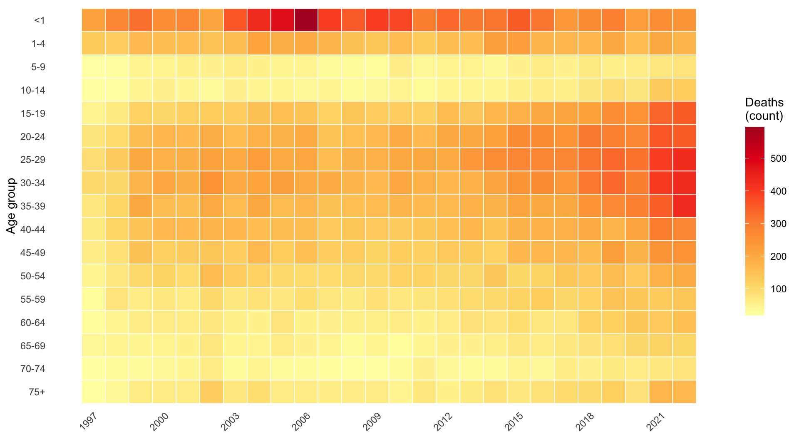
5.3 Estimated annual percentage change (EAPC) by age group
The EAPC is derived from a log-linear regression of annual death counts on calendar year for each age band independently (with a 0.5 continuity correction for zero counts). It estimates the average year-on-year percentage change across 1997–2022. Red = increasing trend; blue = decreasing; faded points indicate p ≥ 0.05. This is the standard WHO / GBD approach for characterising mortality trends by subgroup.
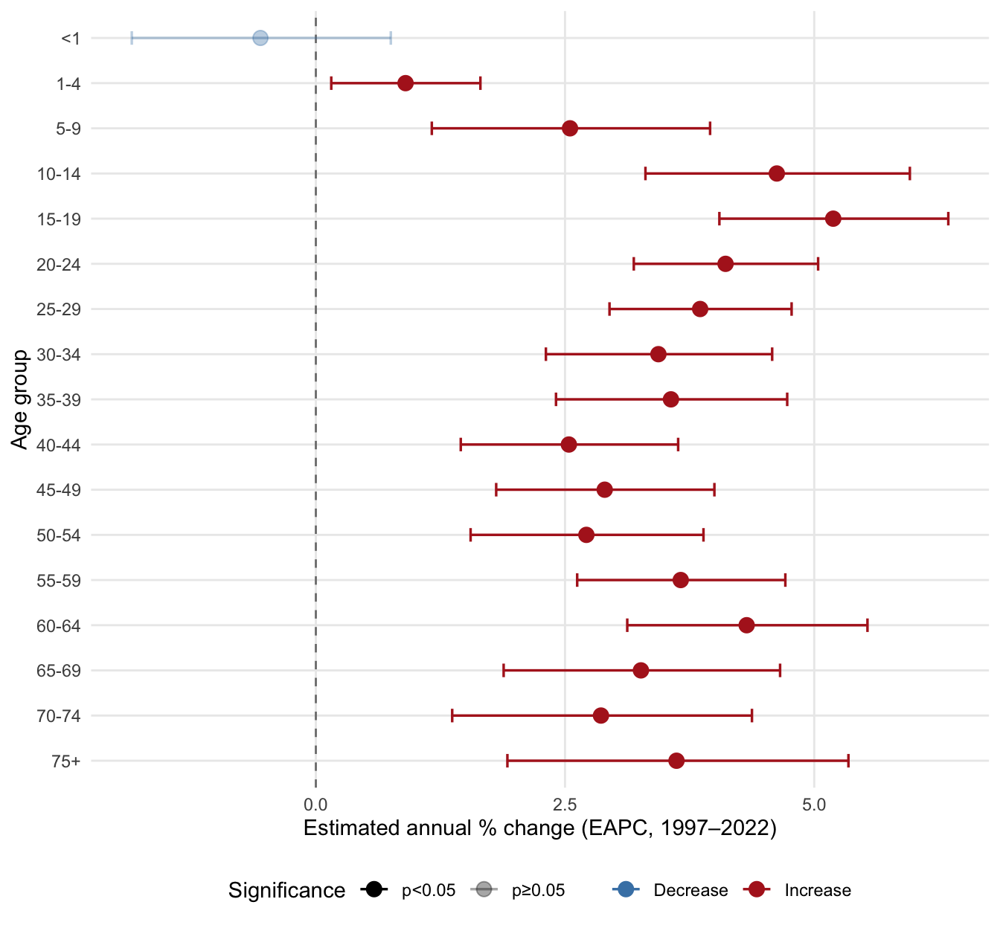
6 Age-group trends by sex
The three figures below stratify the age-trend analysis by sex, enabling direct comparison between male and female poisoning death patterns — e.g. whether rising counts in older age groups are driven by males, and whether any increase in younger age groups is female-predominant.
6.1 Age × year heatmap — counts by sex
Two side-by-side heatmaps showing raw death counts. Allows comparison of absolute burden between sexes across the age-year space.
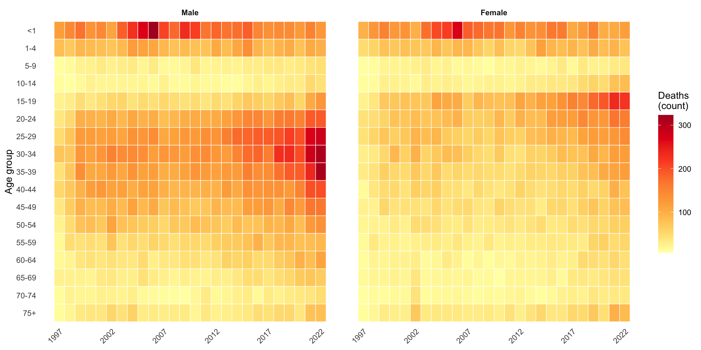
6.3 EAPC by age group — male vs female comparison
Log-linear EAPC estimated separately for each age group × sex combination. Blue circles = males; red triangles = females; faded = p ≥ 0.05. Reading across a row for a given age band shows which sex is driving any trend — and whether both sexes are changing in the same direction and magnitude.
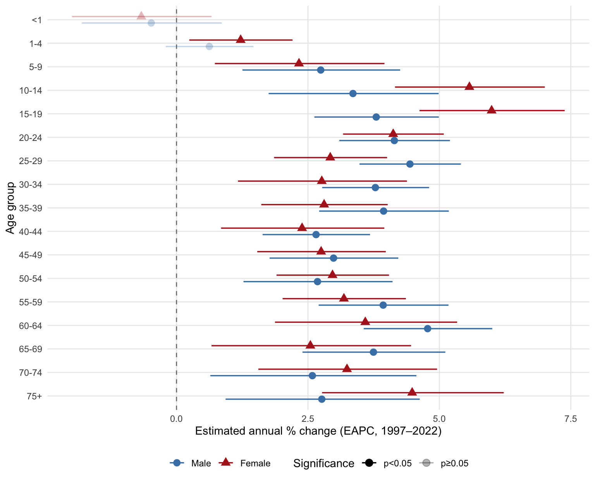
7 Geographic distribution
Counts by province of usual residence (ResProvince), excluding records coded as “Outside SA” or “Unspecified”.
7.1 District hot spots: last 3 years
Pooling the last 3 years stabilizes district-level crude rates and makes potential geographic hot spots easier to interpret than a single-year map.
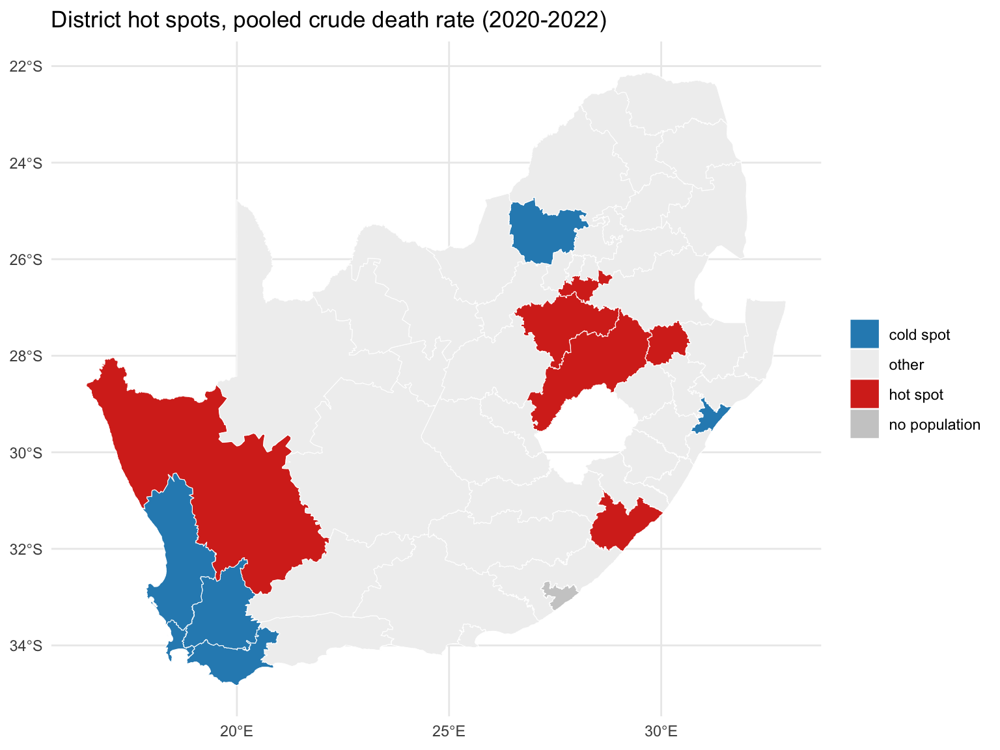
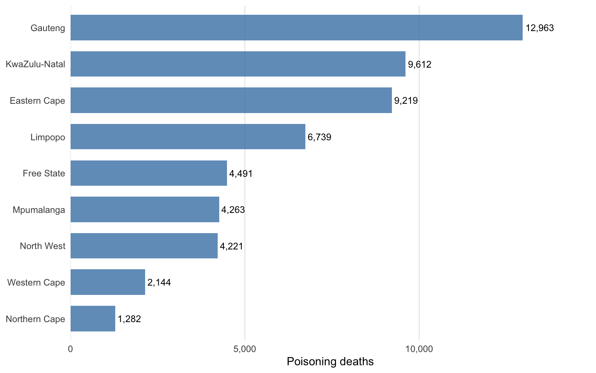
8 Cause breakdown — ICD subcodes
The top 15 three-character ICD-10 subcodes within the poisoning block, ranked by total deaths across the study period.
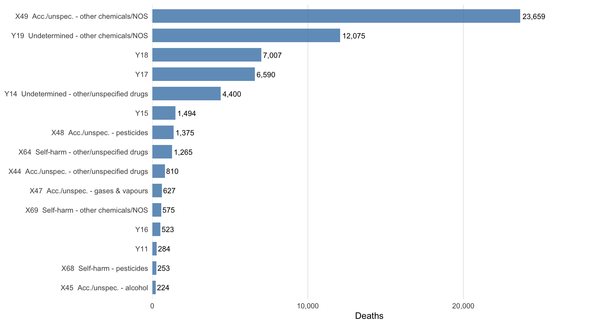
9 Years of Life Lost (YLL)
YLL is computed as the sum of remaining life expectancy at age of death across all registered poisoning deaths with a known, valid age and documented sex (male or female). Individual ages are mapped to WHO standard remaining life expectancy using linear interpolation of the WHO reference life table (Murray 1994; LE at birth = 82.5 years). Records with unknown age or unknown/other sex are excluded from this section but remain in the death-count analyses above.
NoteReference life table
The WHO/GBD standard life table (Murray 1994) anchors YLL at a life expectancy of 82.5 years at birth, providing a universal comparison benchmark independent of local South African life expectancy — which has fluctuated substantially over the study period due to HIV/AIDS and ART roll-out. Using a fixed standard means YLL reflects potential life lost relative to a best-practice survival frontier rather than current national survival. Standard values used for key ages: age 0 → 82.5 yr; age 20 → 62.8 yr; age 40 → 43.1 yr; age 60 → 24.3 yr; age 75 → 11.8 yr.
9.1 Summary
Age group | Male deaths | Male YLL | Male YLL/death | Female deaths | Female YLL | Female YLL/death | Total deaths | Total YLL |
|---|---|---|---|---|---|---|---|---|
<1 | 4,502 | 371,460 | 82.5 | 3,874 | 319,644 | 82.5 | 8,376 | 691,104 |
1-4 | 2,394 | 193,555 | 80.8 | 2,023 | 163,550 | 80.8 | 4,417 | 357,104 |
5-9 | 693 | 52,689 | 76.0 | 565 | 42,904 | 75.9 | 1,258 | 95,593 |
10-14 | 558 | 39,411 | 70.6 | 832 | 58,263 | 70.0 | 1,390 | 97,673 |
15-19 | 1,424 | 93,150 | 65.4 | 2,825 | 185,639 | 65.7 | 4,249 | 278,789 |
20-24 | 2,969 | 179,908 | 60.6 | 2,406 | 146,553 | 60.9 | 5,375 | 326,460 |
25-29 | 3,904 | 217,935 | 55.8 | 2,143 | 119,814 | 55.9 | 6,047 | 337,749 |
30-34 | 4,018 | 204,984 | 51.0 | 1,820 | 92,838 | 51.0 | 5,838 | 297,821 |
35-39 | 3,518 | 162,460 | 46.2 | 1,598 | 73,801 | 46.2 | 5,116 | 236,261 |
40-44 | 3,009 | 124,195 | 41.3 | 1,304 | 53,780 | 41.2 | 4,313 | 177,975 |
45-49 | 2,558 | 93,184 | 36.4 | 1,252 | 45,579 | 36.4 | 3,810 | 138,762 |
50-54 | 2,046 | 64,861 | 31.7 | 1,014 | 32,213 | 31.8 | 3,060 | 97,074 |
55-59 | 1,581 | 42,754 | 27.0 | 835 | 22,682 | 27.2 | 2,416 | 65,437 |
60-64 | 1,285 | 29,078 | 22.6 | 684 | 15,447 | 22.6 | 1,969 | 44,525 |
65-69 | 944 | 17,356 | 18.4 | 610 | 11,118 | 18.2 | 1,554 | 28,474 |
70-74 | 611 | 8,704 | 14.2 | 521 | 7,376 | 14.2 | 1,132 | 16,079 |
75+ | 1,005 | 7,099 | 7.1 | 1,074 | 7,371 | 6.9 | 2,079 | 14,470 |
9.2 Total YLL by age group and sex
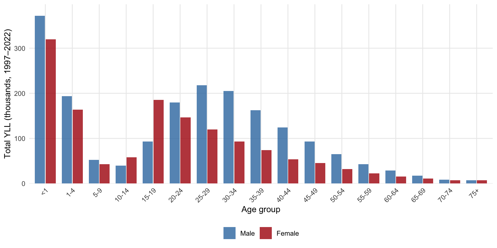
9.3 Mean YLL per death by age group
YLL per death declines monotonically with age because older decedents have fewer remaining standard life-years. The pattern reveals where the per-death burden is highest — typically in younger age groups — even when older groups contribute more deaths in absolute terms.
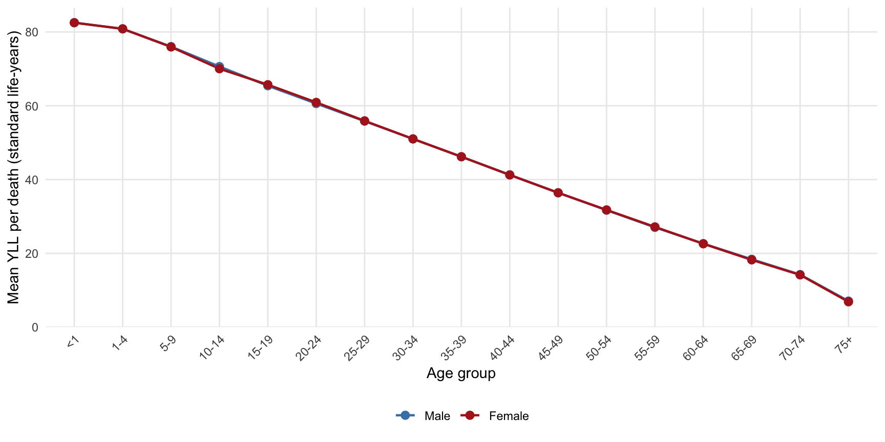
9.4 Annual YLL trend by sex
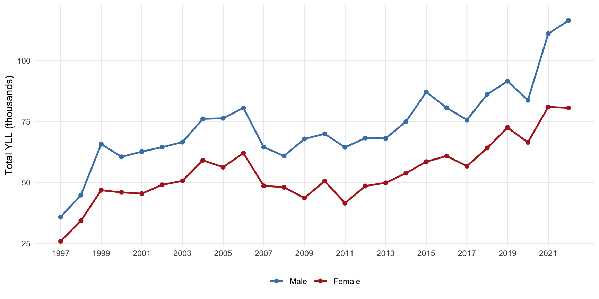
9.5 YLL heatmap — age group × year
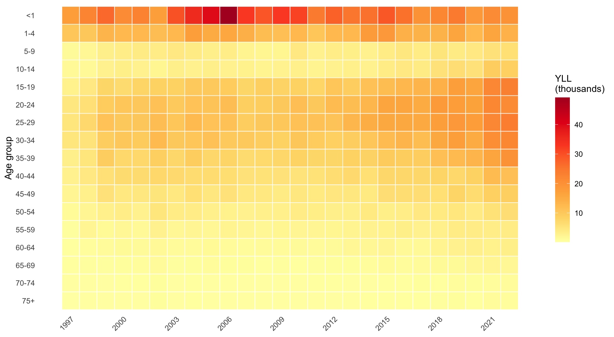
10 Death institution / place of death
The DeathInst field on the South African death notification form records where the death occurred. Values are: Hospital (1), Emergency room / Outpatient (2), Dead on arrival (3), Nursing home (4), Home (5), Other (6), Unknown (8), and Unspecified (9). For the broad grouping below, categories 1, 2, and 4 are combined as Health facility; category 3 (Dead on arrival) is kept separate because it implies the death occurred outside a facility but was certified at one; categories 5 and 6 form Out of facility.
NoteUnspecified records (code 9)
A substantial proportion of records carry code 9 (Unspecified). This likely reflects incomplete form completion rather than a genuinely unknown setting, and mirrors the broader data-quality limitations of the vital registration system. These records are retained in the tables below but excluded from the bar charts to avoid distorting the proportions of known categories. Their exclusion is reported in the figure footnotes.
10.1 X40–X49: distribution by death institution
The chart below shows where accidental/unspecified poisoning deaths (X40–X49) occurred, excluding the Unknown and Unspecified categories. The “Unspecified” share is shown in the table.
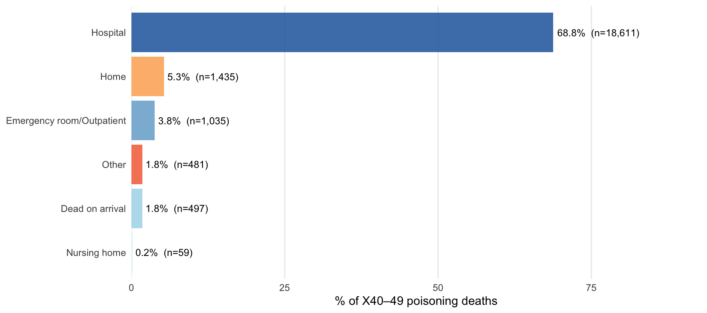
Death institution | Facility group | N | % of X40-49 |
|---|---|---|---|
Hospital | Health facility | 18,611 | 68.8% |
Home | Out of facility | 1,435 | 5.3% |
Emergency room/Outpatient | Health facility | 1,035 | 3.8% |
Dead on arrival | Dead on arrival | 497 | 1.8% |
Other | Out of facility | 481 | 1.8% |
Nursing home | Health facility | 59 | 0.2% |
10.2 Intent composition within each facility setting
The proportional stacked bars show how the intent mix varies across facility settings. Because “Accidental/unspec.” is the ICD-10 default when manner is not stated, settings where non-forensic clinicians certify deaths (e.g. hospital wards) are expected to show the highest proportional contribution from this category.
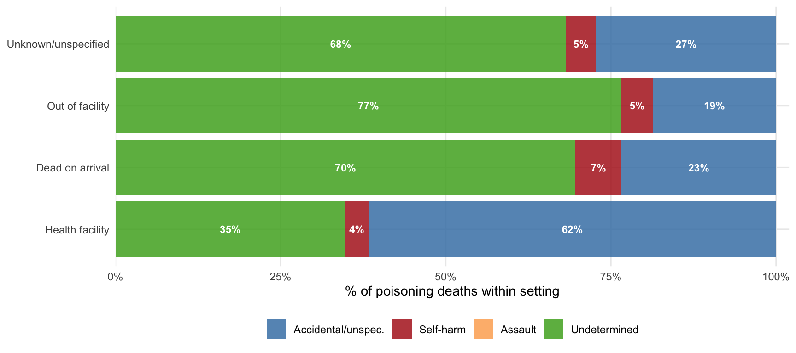
Facility setting | Accidental/unspec. | Self-harm | Assault | Undetermined | Total | % Acc./unspec. |
|---|---|---|---|---|---|---|
Health facility | 19,705 | 1,137 | 4 | 11,099 | 31,945 | 61.7% |
Dead on arrival | 497 | 148 | 0 | 1,480 | 2,125 | 23.4% |
Out of facility | 1,916 | 487 | 0 | 7,869 | 10,272 | 18.7% |
Unknown/unspecified | 4,916 | 830 | 2 | 12,309 | 18,057 | 27.2% |
11 Next steps
- Add population denominators to compute age-standardised mortality rates.
- Stratify provincial trends by intent.
- Link to external toxicology data (e.g. NPIS calls, emergency department presentations) for triangulation with IMS and NCoDV forensic data.
- Investigate the spike/dip years visible in the epicurve.
- Apply probabilistic redistribution of the “Accidental” category using forensic correction factors (e.g. from (3)) to obtain intent-adjusted estimates.
12 References
1.
Groenewald P, Matzopoulos R, Afonso E, Bradshaw D. The importance of including manner of (injury) death on the death notification form. S Afr Med J. 2023;113(9):11–2. doi:10.7196/SAMJ.2023.v113i9.915 PubMed PMID: 37882128.
2.
World Health Organization. International statistical classification of diseases and related health problems, 10th revision, volume 2: Instruction manual [Internet]. 5th ed. Geneva: World Health Organization; 2016. Available from: https://apps.who.int/classifications/icd10/browse/2016/en
3.
Groenewald P, Kallis N, Holmgren C, Glass T, Anthony A, Maud P, et al. Further evidence of misclassification of the injury deaths in South Africa: When will the barriers to accurate injury death statistics be removed? S Afr Med J. 2023;113(9):30–5. doi:10.7196/SAMJ.2023.v113i9.836 PubMed PMID: 37882130; PubMed Central PMCID: PMC11017197.
4.
Prinsloo M, Bradshaw D, Joubert J, Matzopoulos R, Groenewald P. South Africa’s vital statistics are currently not suitable for monitoring progress towards injury and violence Sustainable Development Goals. S Afr Med J. 2017;107(6):470–1. doi:10.7196/SAMJ.2017.v107i6.12464 PubMed PMID: 28604314.
5.
Norman R, Matzopoulos R, Groenewald P, Bradshaw D. The high burden of injuries in South Africa. Bull World Health Organ. 2007;85(9):695–702. doi:10.2471/blt.06.037184 PubMed PMID: 18026626; PubMed Central PMCID: PMC2636399.
6.
Pillay-van Wyk V, Msemburi W, Laubscher R, Dorrington R, Groenewald P, Glass T, et al. Mortality trends and differentials in South Africa from 1997 to 2012: Second National Burden of Disease Study. Lancet Glob Health. 2016;4(9):e642–53. doi:10.1016/S2214-109X(16)30113-9 PubMed PMID: 27539806.
7.
Prinsloo M, Mhlongo S, Roomaney R, Marineau L, Mamashela T, Dekel B, et al. Injury mortality in South Africa: A 2009 and 2017 comparison to track progress to meeting sustainable development goal targets. Glob Health Action. 2024;17(1):2377828. doi:10.1080/16549716.2024.2377828 PubMed PMID: 39145429.